Data Fever
This publication is avaliable for print for the span of 70 days, Apr. 28th, 2022 - Jul. 7th, 2022.
Written and designed by Yunjia Yuan.
You saved my life!
Thank U
Hello
I'm Data Fever's printed clone.
You freed me from my imminent doom in GoDaddy's unknown data center in Amsterdam. I'm living with you now!!!
My creator Yunjia Yuan is the only reason I exist.
Please drop by and say hello via yunjiayuan.design @gmail.com if you can.
Data Fever
Ephemeral Realism, Eternal Reverie
Can data be forgotten? Does data die? Data Fever is an experimental project that aims to disrupt the normality ties around data. Data has been held as a neutral, intangible perpetual entity which seems to be immune to the power of time. Through research, writing, and making, Data Fever sets out to destabilize the assumption and give form to data’s subjectivity, materiality, and ephemerality. Data Fever wishes to provoke questions and creates space for conversations.
.digital & .pdf
DataFever.digital & DataFever.pdf encapsulates the
full breadth of thesis research and design process.
.digital is a temporary site that adapts Data Fever's
content into an interactive experience, resulting in
a wider data circulation. .pdf is a ready-to-print
file inscribing all content into the printed matter
for more transparent data access and longer data storage.
DataFever.digital & DataFever.pdf sheds light on the
transitory nature of the internet, the fragility of
media and the limitation of the digital and printed matters.
The project serves both as a platform to host all
creative practices and also as a design artifact for
further discussion.
.digital & .pdf presents a mode of
practice traversing between the digital and the analogue.
DataFever.digital emphasizes the physicality of the
digital data and the fleeting nature of the internet,
while DataFever.pdf offers an alternative approach to
preserving the digital, bringing the two formats closer.
The project is an very first step to blend the digital and the analogue.
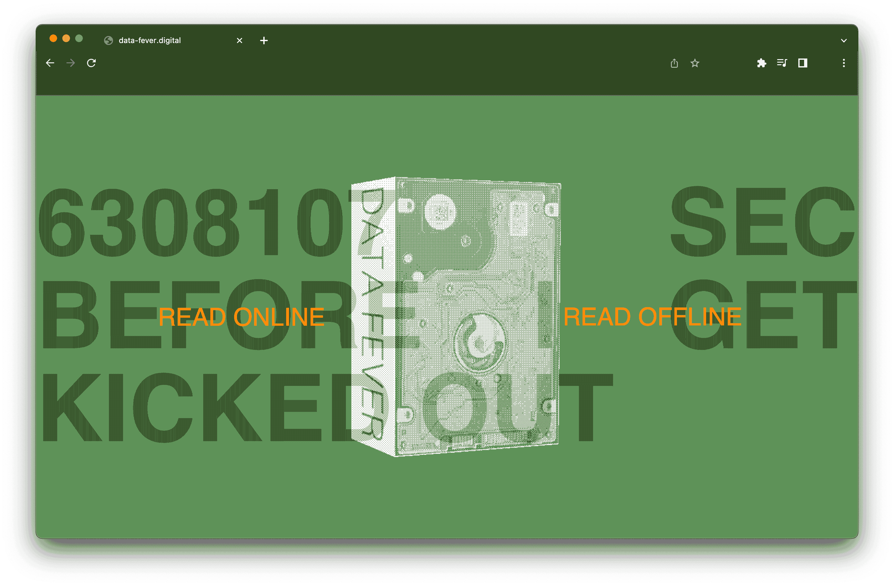

Reflection
I've always had trouble thinking about design in terms like
neutrality, utility, and standard. These do not set well with
me, and I find myself wondering: what are the limitations of
design, and what is the role of a designer?
I meant to approach the concept of the norm at the start of the
thesis, but I battled for months to find the suitable language
or content to convey my concept. As my research progressed, it
became clear to me that the task was to develop a language and
forms for the notions. The issue with normalcy is that it is
ubiquitous, and it is difficult to initiate a dialogue without
a form and language.
The thesis then became more experimental as I employed tools that I enjoy,
tools that I am afraid of, and tools that I had never used before. I
recognized how to counteracting the force of normality by accentuating,
zooming in, and forging. The majority of emphasis is placed on analogue
media. In retrospect, I'm curious how the project would have progressed
if a more digital approach had been employed.
It’s the first step of my design inquiry and pointing me keep learning
and questioning. This project has allowed me to immerse myself in the
unknown, to become lost while allowing my curiosity to be the driving force.
Data Fever
“No one ever steps in the same river twice, for it’s not the same river, and they’re not the same person.” ——Heraclitus
If we imagine the information generated by every google search as a stream of data,
can we step twice in the same stream?
How long will the data stream live?
How to sustain the data?
Can data be forgotten?
Refresh is to replace the deteriorated with the new.
Refresh is to delete.
Data is not neutral
We are surrounded by data; we interact with it 24/7;
we process raw data to extract information. For example,
a data entry is a one-time verification number we
obtained during a login session; a data is city wide
census you participate every other year; a data log
is this year’s global estimated energy use. Data acts
as this ubiquitous matter. But what exactly do we mean by “data”?
In the following essay, the term datum refers to generic pieces
of information, while data means information framed for someone’s interest.
A string of digits, Apple Two-Factor Authentication Verification Code
1910 Manhattan census map,
New York Public Library Digital Collections
Global Energy Review 2021,
International Energy Agency
The etymology of data
Do you consider data a singular or plural noun? According to Google, “data is...” is nearly as prevalent as “data are.” However, datum is the singular grammatical form of data. datum was first used in 1646 to indicate “something given.” The term describes the action of surveying the globe from one place to another in a geographic setting. Data in Chinese has a fascinating linguistic etymology similar to English. In Chinese, the word data 数据 stands for 数 — counting (verb) or number (noun), and 据 — proof or record for evidence. Data 数据 refers to the activity of counting numbers for proof of evidence.
Data selection
Data stands for a collection of processed information.
A datum can originate from anywhere, but it must always
be translated into some form for further analysis. More
often than not datum takes on a numerical representation.
When a datum is registered as a data point, it loses all
of its ambiguity and context. Only the essential value is
kept and translated to a numerical scale.
We should also throw light on the types of data gathered
to develop an understanding of an issue. For the observer,
what categories of datum are visible? The example below
seeks to address the question, “What is boredom?” The vague
question is reframed as to how people show boredom while
waiting in line for coffee. The visible datum for the
observer is people’s movements. And by counting and
categorizing specific behaviours, we conclude that a
particular action signals that the person is bored. We
rely on indirect data to construct a sophisticated grasp
of a subject. If a datum is not visible to the observer,
it will never be included in the dataset.
Data visualization on boredom, 2021
What is counted, and how does it appear on the scale? These are subjective judgements defined by us, rendering the data fetched biased from the outset. The 2018’s “gender shades” project study reveals divergent facial recognition algorithm errors across demographic groups. It is still under human’s hands to define the dataset’s parameters. Dataset is blended with human bias, and it provides a subjective foundation for algorithms.
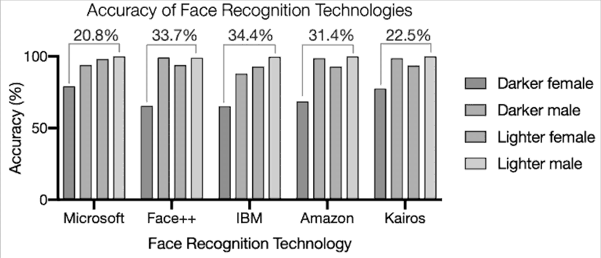 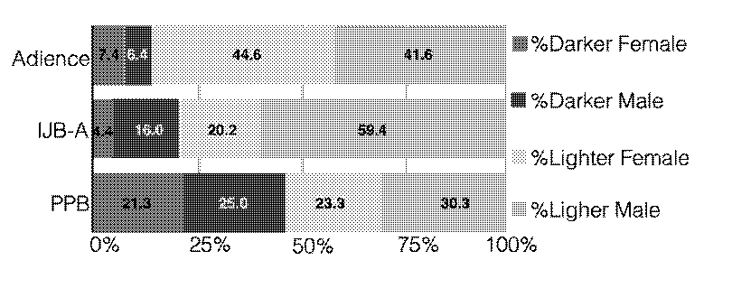
Gender Shades: Intersectional Accuracy
Disparities in Commercial Gender Classification
Auditing five face recognition technologies.
Racial Discrimination in Face Recognition Technology
What is good data?
To keep its vibrancy, data is constantly updated. As a result,
it is necessary to maintain, alter, and optimize the dataset.
A study of something is always provided with interest. A regular
data cleaning guarantees an accurate interpretation of the data
pattern. The dirty data is the inconsistent, imprecise, erroneous,
and outdated bits. What remains in the dataset presents itself
as a neutral, objective entity. It must be selected, filtered,
and synthesized for any datum to be used.
A data point involves someone somehow counting, deciding what to
keep and what to remove, and utilizing the dataset to develop a
knowledge of a subject of interest. Data is the pinnacle of a
system that makes sense of, manages, and controls a subject.
Data is essential to the operation of any hierarchical administration.
As Lisa Gitelman argued in Paper Knowledge, “Any object can
be a thing, but once it is framed as or entered into evidence —
once it is mobilized — it becomes a document, an instance
proper to that genre.” To exist and function as data,
it must be framed and presented as such. Data entails the process
of counting, collecting, and interpreting.
Data is never raw.
Data collection is never a neutral act.
Data is physical in nature. The lack of form poses threats to how we interact, manipulate and act on the subject. Data’s physicality grants us permission to edit, change, and destroy it. Data needs to take on a visual form to function.
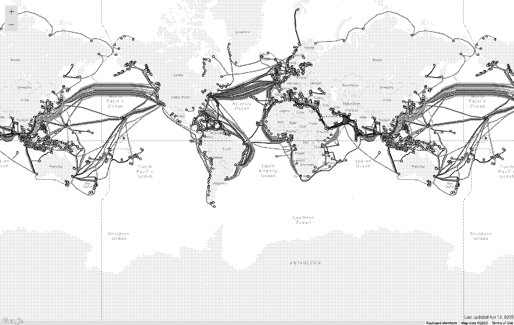 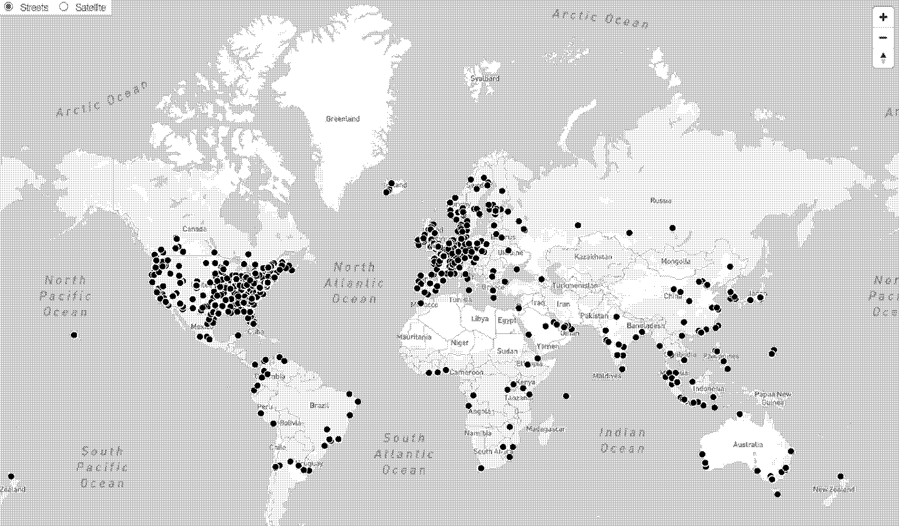
Submarine cable map, https://www.submarinecablemap.com/
Data center map, https://baxtel.com/map
Technological advancements have strengthened our assumption that data is digital, invisible, and intangible. With cloud computing, submarine cable connections, and server farms, data disappears right in front of us and regenerates itself in a digital representation while lives on some hard drives in a data centre thousands of miles away.The contemporary era of big data allows datasets to grow beyond our imagination and capacity to grasp its scale. The sheer physical volume of one of Google’s datasets, for example, is nearly impossible to visualize.
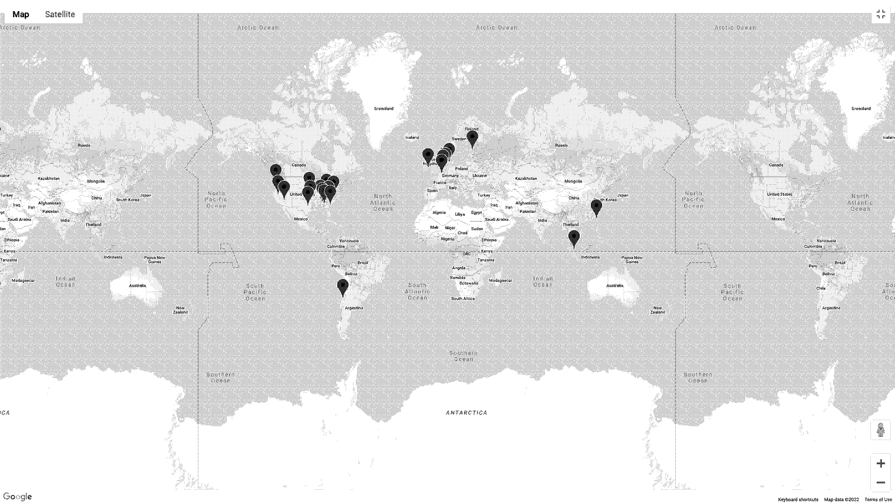


Google data center location map, https://www.google.com/about/datacenters/locations/
A compilation of Google Map screenshot of its data center location
“If something is free, you’re not the customer; you’re the product.”
——Bruce Schneier
In her book Raw Data Is an Oxymoron, Lisa Gitelman asks, “What are we to data and data to us?” More often than not, we are the source of data. "Data is the new oil." said by Clive Humby in 2006. 4 years after Humby’s statement, Schneier provokes the increasingly prevalent idea that if we are the producer of data, we are, in turn, the product of data. Everything about us, from where we live to what we consume, is a fruitful data point.
At first look, the valid data points are the active actions, such as typing, clicking, and swiping. However, a lack of activity has been proven to be valuable. Ad blockers are seen as a form of resistance against pervasive targeted advertising. However, ad blocker, in theory, can improve targeting accuracy by filtering out people who are unlikely to convert in any case.

A screenshot of my ad Blocker hard at work
When you skip a YouTube ad, opting out provides statistics to paint a more precise picture of what you’re interested in. In other words, regardless of our actions or inactions, we are continually constructing to refine a dataset that understands us more.
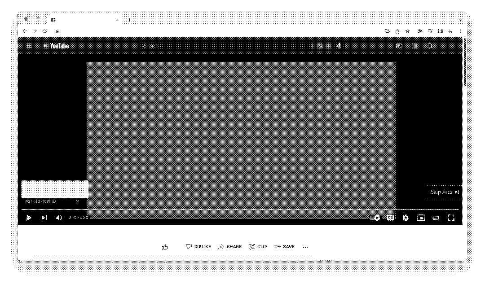
Youtube's skip ad button
Data dies when it loses its comprehen
-sibility.
The data dies when it no longer delivers meaningful information on the subject of interest.
The data linger on as long as the frame of interest is maintained.
When the language in which the data is contained becomes extinct, the data survives, but the information perishes.
When the program that translates the data becomes obsolete, the data continues to exist but is no longer accessible.
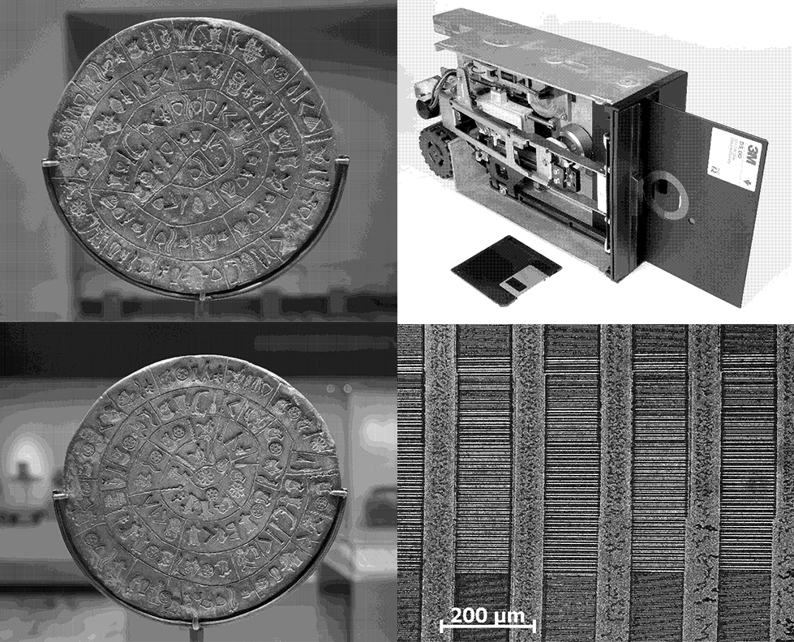
The Phaistos Disc as an example illustrating
how easily information can be lost in the long term https://en.wikipedia.org/wiki/Phaistos_Disc
Floppy disk inserted in drive & visualization of maganetic information on floppy disk https://en.wikipedia.org/wiki/Floppy_disk
When the energy that powers the data centre is switched off, the data remains on the hard drive disk, but it no longer responds to data fetch requests.

Data-fever.digital's status after its hosting expires
When the media deteriorates over time, the inscribed data gradually falls apart and fades into obscurity.
Terracotta warriors loses their color 15 seconds after they were unearthed, National Geographic


Can I get my money back
Can I get my money back explores data degradation, data circulation, and data encryption. In addition, the research leads to locating data as the site of thesis inquiry. The project also sparks a continuous interest in experimenting with publishing across media.
Can I get my money back begins with exploring decay’s visual language. The process involves scanning the original receipt at low resolution, spraying alcohol on the thermal paper, scanning and printing the copies, and shredding the receipt. It points the research to investigate media history, digital data longevity, and data preservation.
A series of zines are produced to distill the visual outcomes and research on data’s ephemerality. Each copy of the zine is encrypted: the first issue is punched with a shasum - a1 hash code; the second issue uses a security question as to its two-factor authentication. The zines are distributed for free within Pratt Institute.
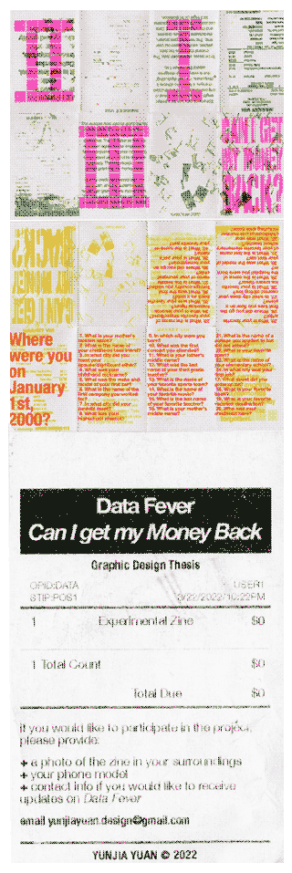Participants are asked to provide additional information to
formulate a collective ledger for the publication’s circulation.
The results are gathered and compiled into an ongoing publication.
It serves as an archive repository documenting the project’s trajectory.
DataFever.obj
DataFever.obj poses questions on the permanence of data and its relationship to media and materiality. Through making, translating, and documenting, Data Fever begins to position itself to initiate conversations and destabilize norms on data. Moreover, the project raises attention on data and sustainability.
DataFever.obj alternates between the analogue and the digital. It presents various data storage methods, from an inscription on clay to NFT minting. The physical objects are digitized to 3D scanned models as well.

A series of posters are put together to present different media types and research on material and energy consumption. The design is then reproduced using risograph on newsprint. The ephemeral print serves as yet another entry point to Data Fever’s temporary web presence. The contrast in material and format opens up the curiosity in shifting Data Fever between printed matter and the digital realm.
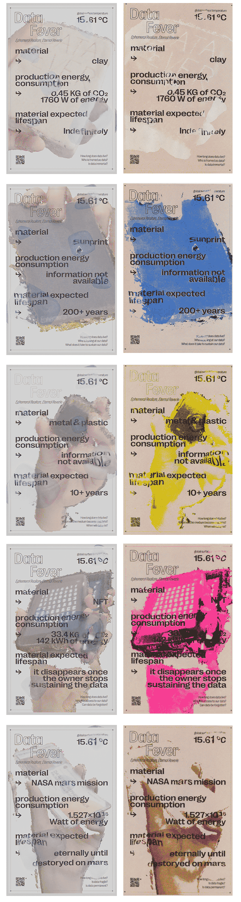DataFever.mov
DataFever.mov introduces the factor of time and environment to the destruction of data. Data Fever gets one step closer to combining material, form, and messaging. The project further experiments with how to adapt digital content to printed matters.
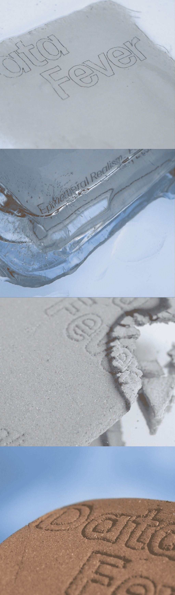DataFever.mov switches to an abstract perspective and approaches the subject in a new light. The film captures the data disintegrating in real-time. The actions of burning and melting reflect on data’s vulnerability in the face of global warming. Moire effect and flipbook are used as techniques to incorporate the motions into printed format. The book communicates the weight of time by transforming the snippets into a hundred pages.

Special Thanks
To Charlie, Elaine, Ja, Lis, Olivia, Shiloh, Wendy, Yiheng, Yiyi, who keep me sane and support me with love
To my mum and dad
To Prof. Chris Lee
To all the amazing people I get to know during the past crazy 4 years